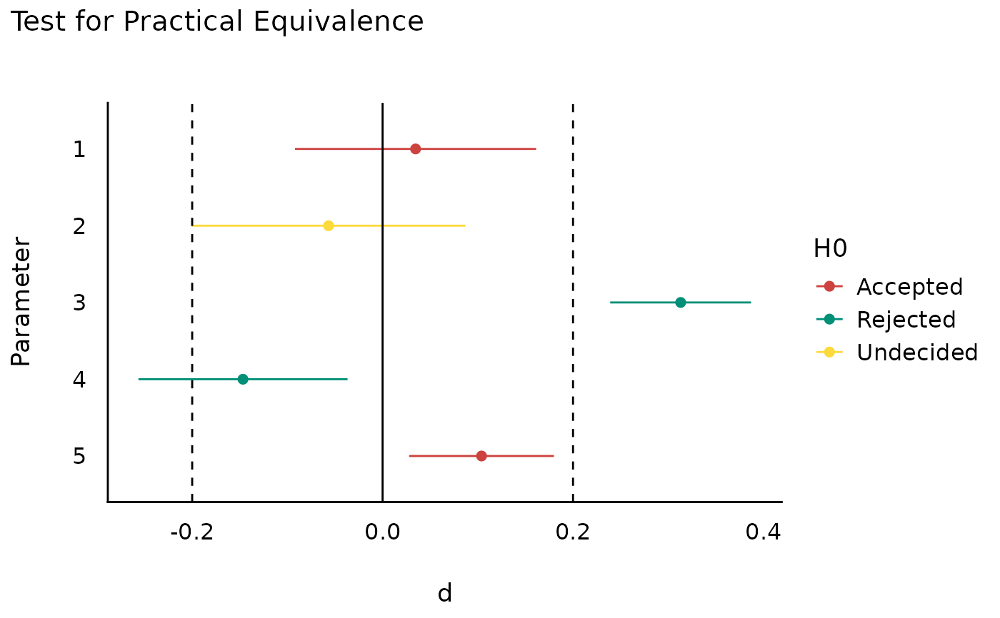
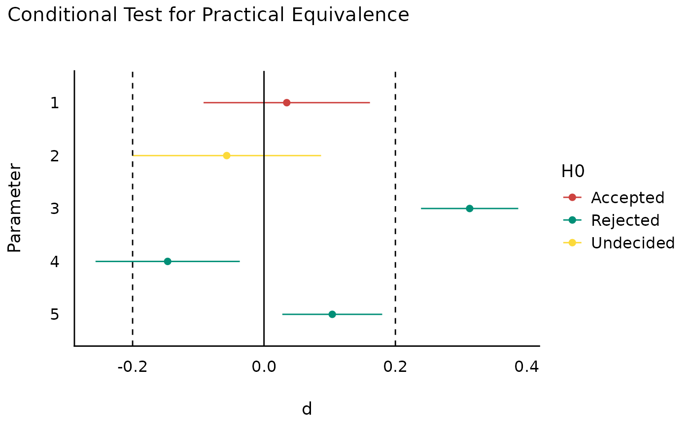
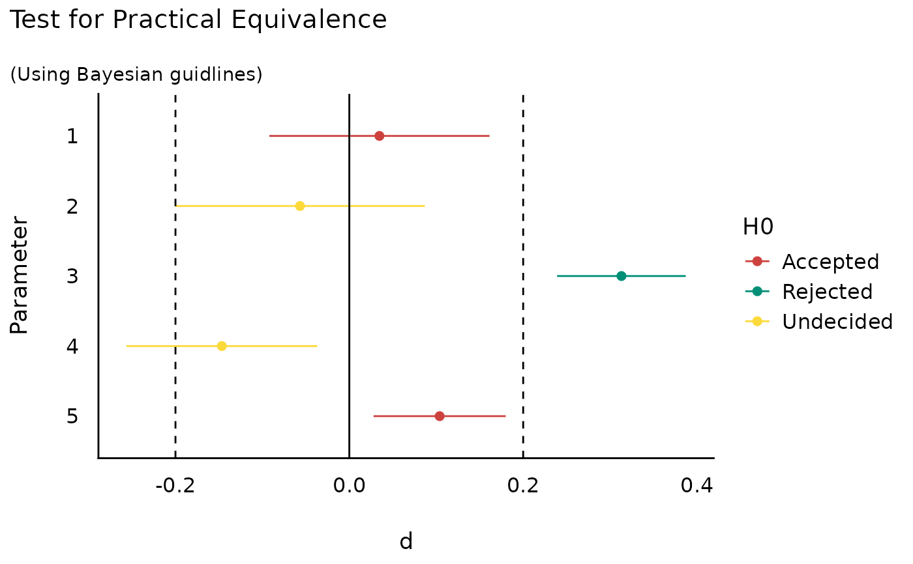

Test Effect Size for Practical Equivalence to the Null
Source:R/equivalence_test.R
equivalence_test.effectsize_table.RdPerform a Test for Practical Equivalence for indices of effect size.
Usage
# S3 method for effectsize_table
equivalence_test(
x,
range = "default",
rule = c("classic", "cet", "bayes"),
...
)Arguments
- x
An effect size table, such as returned by
cohens_d(),eta_squared(),F_to_r(), etc.- range
The range of practical equivalence of an effect. For one-sides CIs, a single value can be proved for the lower / upper bound to test against (but see more details below). For two-sided CIs, a single value is duplicated to
c(-range, range). If"default", will be set to[-.1, .1].- rule
How should acceptance and rejection be decided? See details.
- ...
Arguments passed to or from other methods.
Details
The CIs used in the equivalence test are the ones in the provided effect size
table. For results equivalent (ha!) to those that can be obtained using the
TOST approach (e.g., Lakens, 2017), appropriate CIs should be extracted using
the function used to make the effect size table (cohens_d, eta_squared,
F_to_r, etc), with alternative = "two.sided". See examples.
The Different Rules
"classic"- the classic method:If the CI is completely within the ROPE - Accept H0
Else, if the CI does not contain 0 - Reject H0
Else - Undecided
"cet"- conditional equivalence testing:If the CI does not contain 0 - Reject H0
Else, If the CI is completely within the ROPE - Accept H0
Else - Undecided
"bayes"- The Bayesian approach, as put forth by Kruschke:If the CI does is completely outside the ROPE - Reject H0
Else, If the CI is completely within the ROPE - Accept H0
Else - Undecided
References
Campbell, H., & Gustafson, P. (2018). Conditional equivalence testing: An alternative remedy for publication bias. PLOS ONE, 13(4), e0195145. doi:10.1371/journal.pone.0195145
Kruschke, J. K. (2014). Doing Bayesian data analysis: A tutorial with R, JAGS, and Stan. Academic Press
Kruschke, J. K. (2018). Rejecting or accepting parameter values in Bayesian estimation. Advances in Methods and Practices in Psychological Science, 1(2), 270-280. doi:10.1177/2515245918771304
Lakens, D. (2017). Equivalence Tests: A Practical Primer for t Tests, Correlations, and Meta-Analyses. Social Psychological and Personality Science, 8(4), 355–362. doi:10.1177/1948550617697177
See also
For more details, see bayestestR::equivalence_test().
Examples
# \donttest{
data("hardlyworking")
model <- aov(salary ~ age + factor(n_comps) * cut(seniority, 3), data = hardlyworking)
es <- eta_squared(model, ci = 0.9, alternative = "two.sided")
equivalence_test(es, range = c(0, 0.15)) # TOST
#> # Test for Practical Equivalence
#> ROPE: [0.00, 0.15]
#>
#> Parameter | Eta2 (partial) | 90% CI | H0
#> ----------------------------------------------------------------------------
#> age | 0.16 | [0.12, 0.21] | Rejected
#> factor(n_comps) | 0.21 | [0.16, 0.26] | Rejected
#> cut(seniority, 3) | 0.17 | [0.12, 0.21] | Rejected
#> factor(n_comps):cut(seniority, 3) | 0.01 | [0.00, 0.03] | Accepted
data("RCT_table")
OR <- oddsratio(RCT_table, alternative = "greater")
equivalence_test(OR, range = c(0, 1))
#> # Test for Practical Equivalence
#> ROPE: [0.00, 1.00]
#>
#> Odds ratio | 95% CI | H0
#> -----------------------------------
#> 4.73 | [3.00, Inf] | Rejected
#>
#> - One-sided CIs: upper bound fixed at [Inf].
ds <- t_to_d(
t = c(0.45, -0.65, 7, -2.2, 2.25),
df_error = c(675, 525, 2000, 900, 1875),
ci = 0.9, alternative = "two.sided" # TOST
)
# Can also plot
if (require(see)) plot(equivalence_test(ds, range = 0.2))

if (require(see)) plot(equivalence_test(ds, range = 0.2, rule = "cet"))

if (require(see)) plot(equivalence_test(ds, range = 0.2, rule = "bayes"))

# }